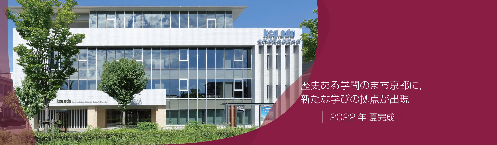

About Me
My name is Sandesh subedi or you can simply call me by my first name “sandesh ”. I am 28 years. i birth in pokhara,nepal but my recently home town in chitwan,nepal. Currently I am living in Kyoto, Japan studying in KCGI (The Kyoto college of graduate for informatics) for my MSc degree in information technology. . I am a very enthusiastic person always trying to grab something knowledgeable and I am always honest and upfront about who I was and what I loved.
Work Experience
2015A.D – 2022A.D
I worked as a branch incharge at swarojgar laghubitta bittiya sanstha limited.
Skills
- HTML
- CSS
- Java
- Microsoft office
Languages
Hobbies
- Playing table tenis
- Readings Books
- Playing Criket
- Fishing
- Watching adventure movie
- Listening music
Education
| College Name | Faculty | Location | Passed year |
|---|---|---|---|
| shree adarsha higher secoundary School | SLC (School Leaving Certificate) | chitwan,dibyanagar, Nepal | 2012 A.D |
| ganesh man singh multipal campus | Management | kalanki,kathamandu, Nepal | 2013-2014 A.D |
| uma badi adarsha shrechan collage | Business Management | chitwa , Nepal | 2013-2015 A.D |
| The Kyoto College of Graduate Studies for Informatics (KCGI) | Information Technology (IT) | Kyoto, Japan | Running |
further education in japan
i am stying at KCGI with best it course in japan. The Kyoto College of Graduate Studies for Informatics will respond to the needs of society, take charge of the times, and train applied information technology specialists with advanced practical abilities and creativity to lead the next generation. so i choice it for my bright future.
In recent years, with the progress of science and technology, remarkable technological innovation, and rapid changes in the social economy (diversification, complexity, sophistication, globalization, the arrival of the IoT era, etc.), there are growing expectations for the development of advanced professionals in the IT field who are active socially and at an international level. However, no university or graduate school has been able to meet the challenge of fostering advanced IT professionals in technical education in the IT fields over and above information and management specializations. In response to such a challenge, The Kyoto College of Graduate Studies for Informatics was established as Japan's first and only graduate school specializing in IT in April 2004. Being Japan's first computer education institution and through its tradition and achievements, Kyoto Computer Gakuin has been training information processing engineers to meet the needs of industry for 59 years and counting. In addition, based on the global educational network with the Rochester Institute of Technology and other overseas universities, KCGI incorporates the world's latest IT education curriculum. KCGI includes management and business education and aims to train highly skilled professionals in the IT field, fostering top leaders in IT application fields such as CIOs (Chief Information Officers) in a way that conventional graduate schools of research have not been able to. *The name of The Kyoto College of Graduate Studies for Informatics is abbreviated as "KCGI".
